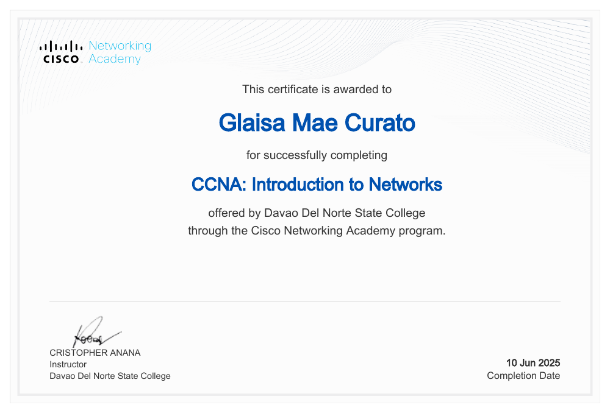
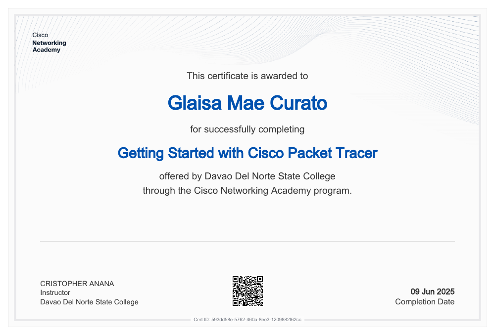

2021–2024
Senior High School
Information and Communications Technology (ICT-CSS)
School name to be added
I'm an aspiring UI/UX Designer with more than one year of experience creating mobile and web interface concepts that feel modern, intuitive, and visually refined.
My work spans Graphic Design, Video Editing, and UI/UX Design — allowing me to shape ideas from first sketch to polished digital experience.
I'm always eager to learn new technologies, improve my creative process, and take on new challenges.
Glaisa Mae · Creative Designer
Personal profile
My career objective is to grow my practice in UI/UX design, graphic design, and video editing, creating thoughtful digital experiences while continuing to learn.
A downloadable CV will be available when the author supplies a PDF.
2021–2024
Information and Communications Technology (ICT-CSS)
School name to be added
2024–2026
Bachelor of Science in Information Technology
Institution and current year level to be added
Existing practice dates are listed below. Employment or organization details have not been provided.
2024–Present
2024–Present
2024–Present
Skills
Combining creativity, strategy, and technical expertise to craft impactful digital experiences across design, motion, and user interfaces.
Software I Use
The platforms and software I use to bring ideas to life through design, editing, and digital experiences.
Continued learning
Course-completion certificates earned through Cisco Networking Academy, offered by Davao Del Norte State College.

Cisco Networking Academy
Davao Del Norte State College
Completed
View certificate (PDF, new tab)
Cisco Networking Academy
Davao Del Norte State College
Completed
View certificate (PDF, new tab)